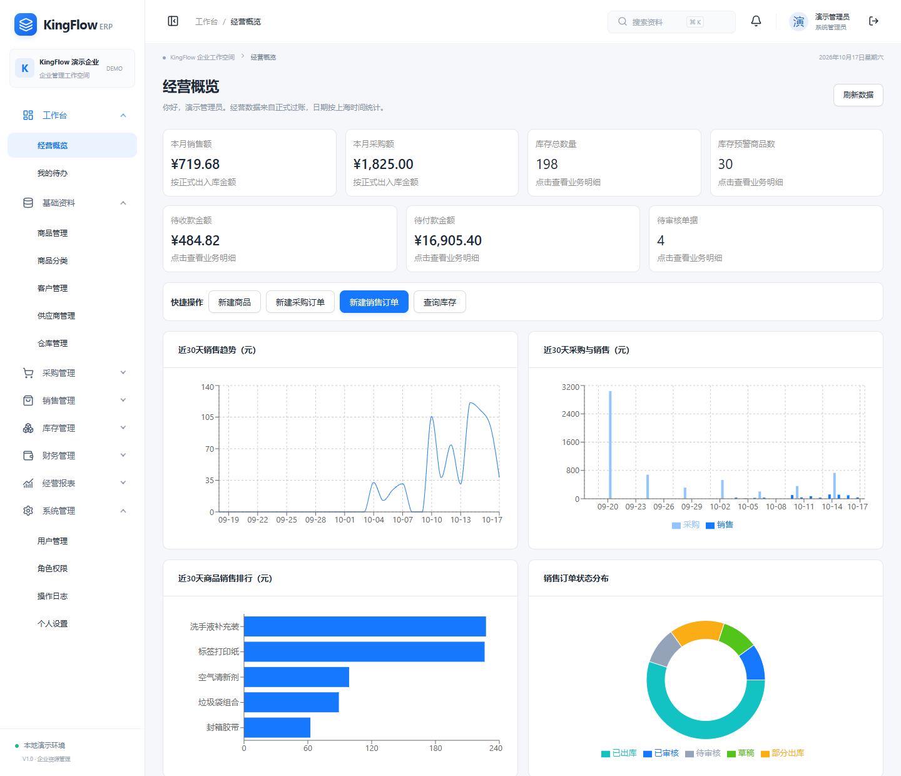
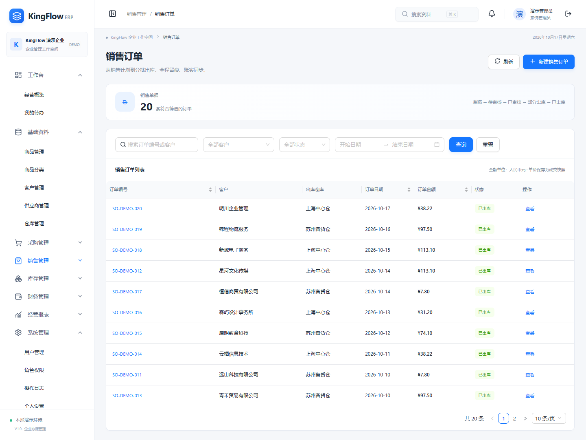
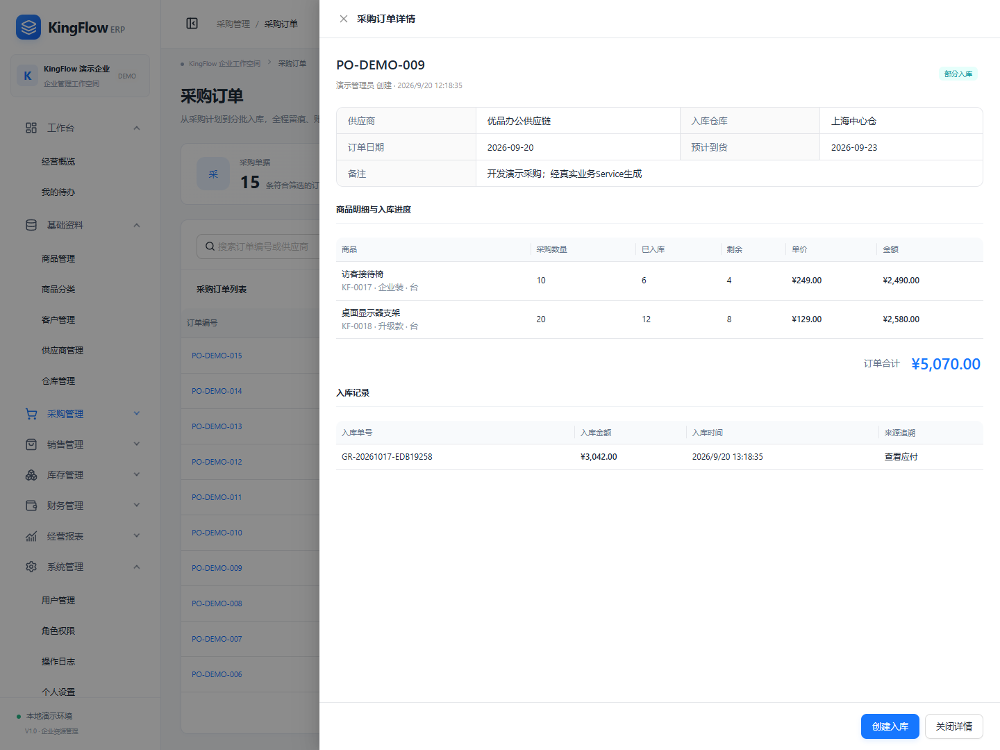
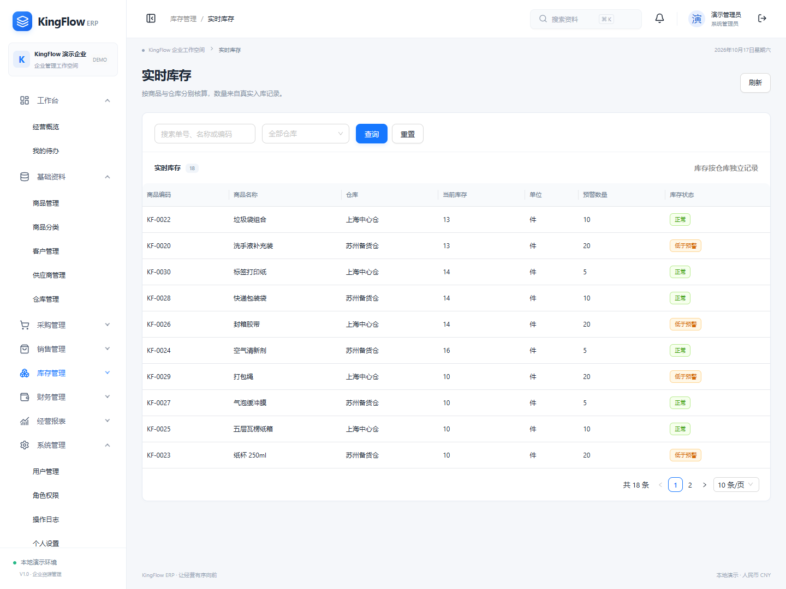
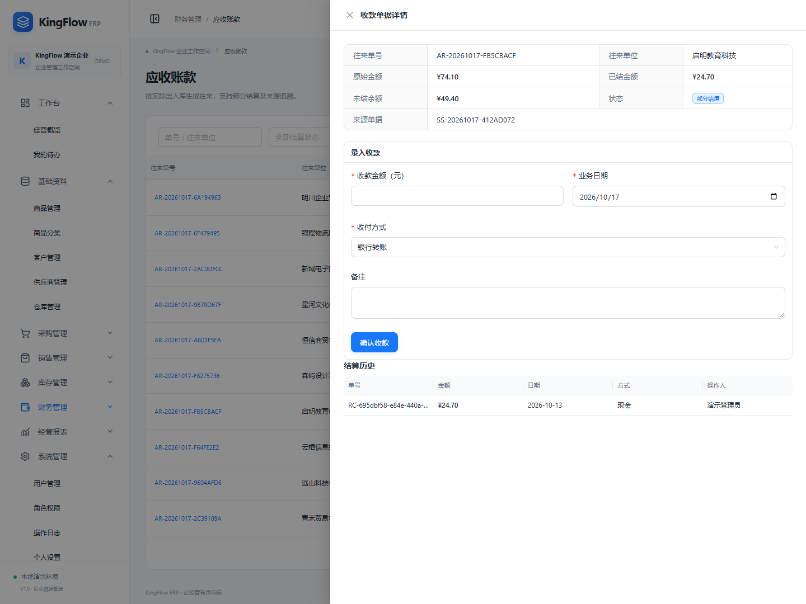
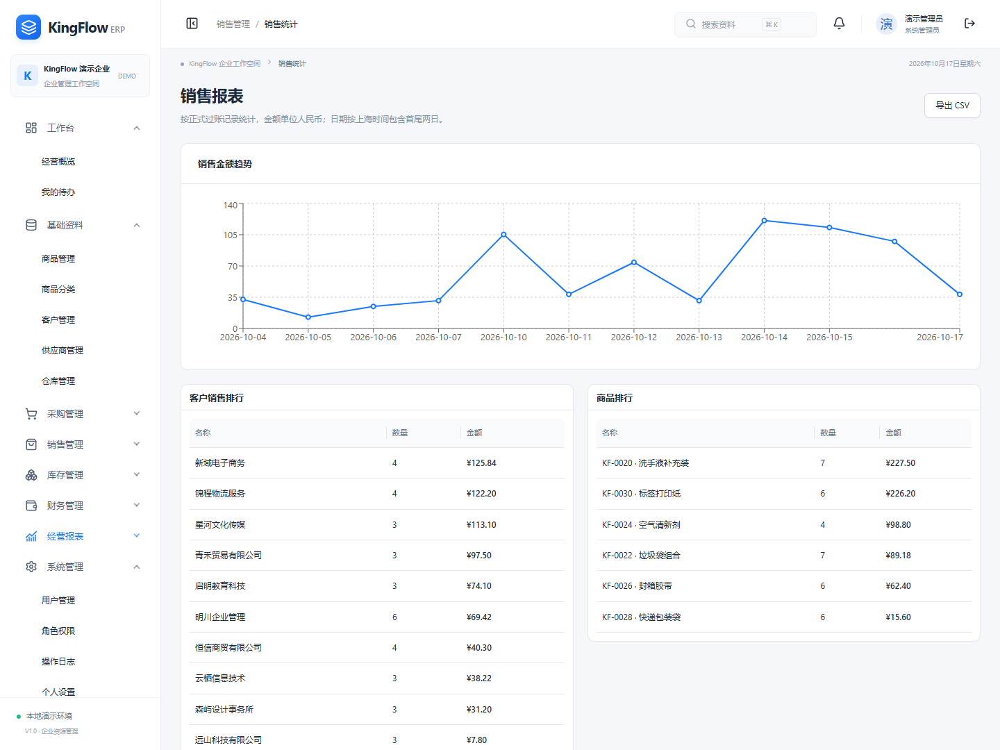
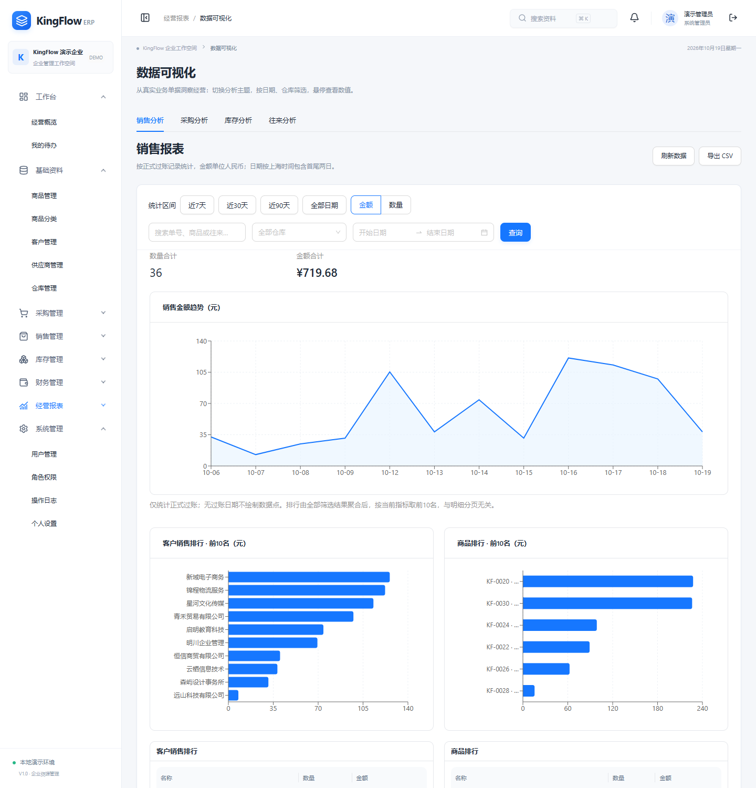
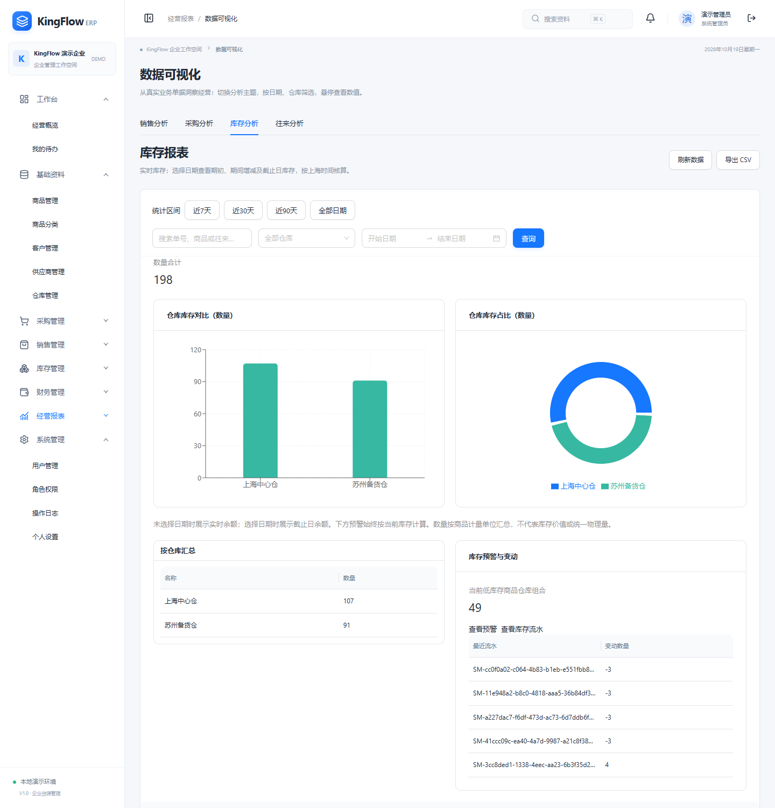
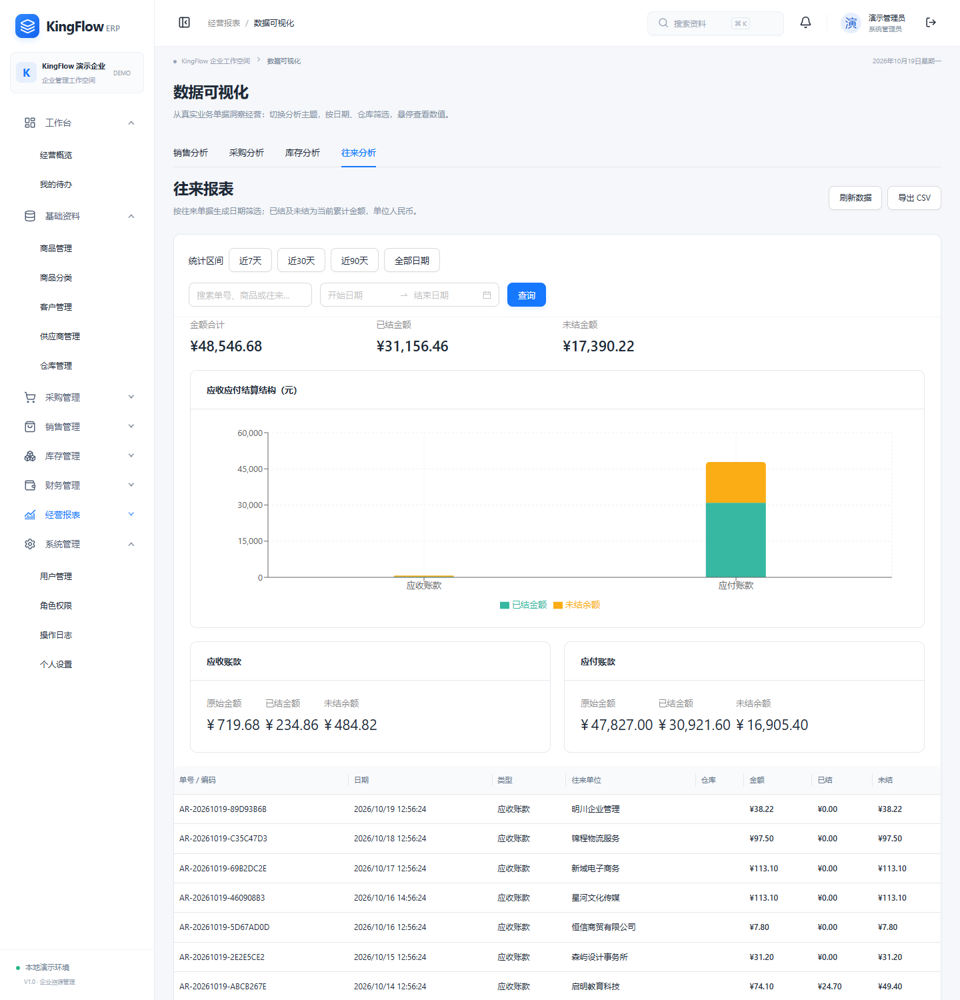

FULL-STACK PORTFOLIO / 2026.10 / V1.0
KingFlow ERP
从采购入库到销售回款的完整业务闭环
面向中小型商贸企业的中文 ERP Demo。以真实 API、数据库事务和自动化验收为基础，实现采购、销售、库存与财务往来的数据联动。
8业务与管理模块
6默认用户角色
81单元与真实 API 测试
27真实浏览器端到端测试
业务与工程，形成闭环
支持实际操作与刷新持久化；审核、过账、库存和结算规则均在后端校验。
采购与销售
采购订单 → 审核 → 分批入库 → 应付 → 付款
销售订单 → 审核 → 分批出库 → 应收 → 收款
商品/客户/供应商/仓库基础资料，库存余额与流水、库存调整和预警，经营图表与 CSV 报表。
重点实现
- 事务与条件更新，防止负库存和超额结算。
- 幂等键及唯一来源约束，断网重试不重复过账。
- 整数分金额与成交价格快照，保持历史一致。
- 服务端角色授权、Session/CSRF、脱敏审计。
真实运行界面
以下截图来自独立、干净的演示数据库。点击图片可查看原尺寸，不使用本地业务数据或前端模拟状态。









2026-10-19新增四主题可视化。PDF保留2026-10-17原版，新增功能以本页、README及07–09截图为准。
可复现，才能评审
首次运行
准备 Node.js 22.12+ 或 24、pnpm 11.25；在解压后的项目目录打开终端，安装依赖需要网络。
pnpm install --frozen-lockfile pnpm db:migrate pnpm db:seed pnpm dev
访问 http://localhost:5173
演示账号 admin / KingFlow@2026
此离线页面只展示项目资料；真实业务操作需启动前后端。
建议现场演示
- 新商品采购 10 件 × 80 元，分批入库 6+4 件。
- 同仓销售出库 3 件 × 120 元，库存剩 7 件。
- 应收 360 元，分两次收 100+260 元，完成结清。
- 查看流水、报表、审计，并验证库存不足与越权被拒绝。